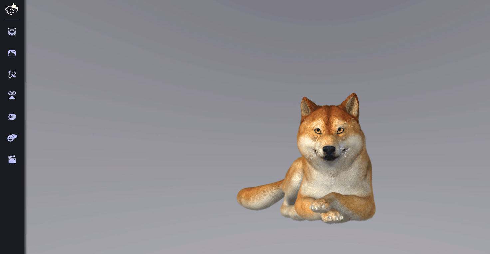
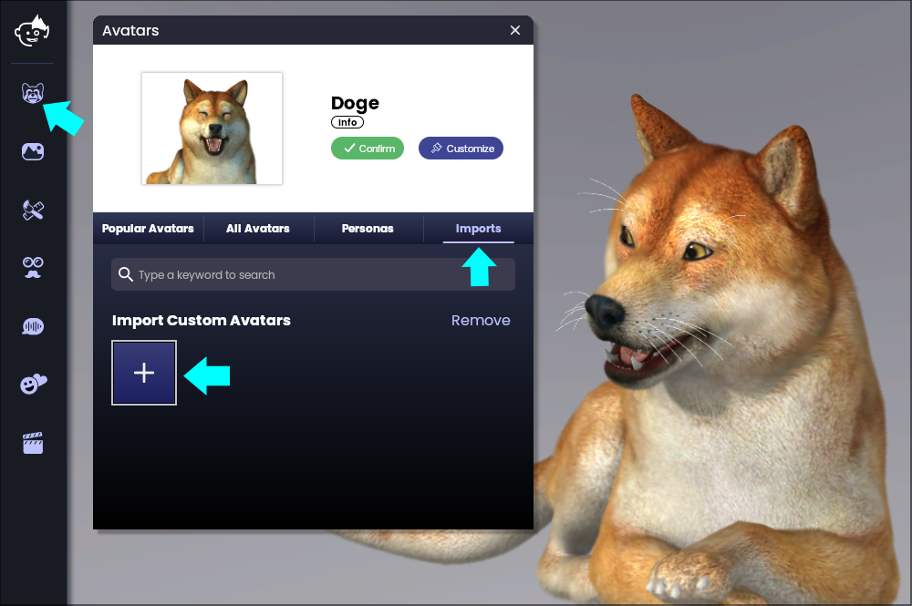
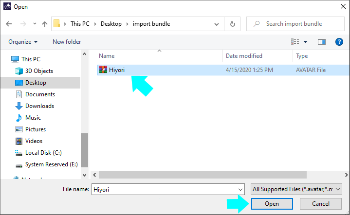
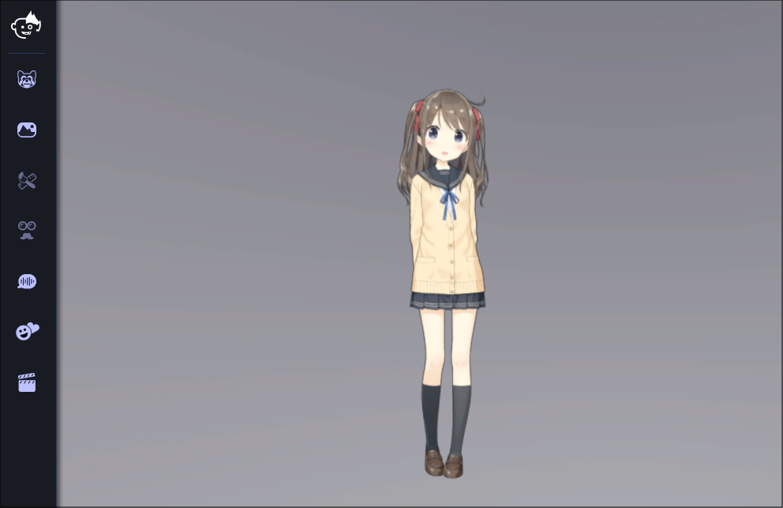

.avatarのバンドルをインポート
まとめた主要なアイテムのタイプ（3D/2Dハイブリッドアバター、背景、小道具）はどれもインポートが可能で、2つのうちどちらかのインポート方法を使用すればAnimaze PCアプリで使用できるようになります。カスタムアバター機能をドラッグしてドロップ、またはインポートする。
ドラッグ＆ドロップ
Animaze Windowsのアプリにあなたのアバターを導入する最もシンプルな方法は、アプリ内で.avatarバンドルをクリックしてドラッグすることです：
.avatarのファイルをアプリ内のどこかにドラッグ＆ドロップします。
適切なシェルフでインポートしたアイテムを参照します。

Animazeを開きます
左上のメニューから頭アイコンをクリックし、インポートタブへ行ってカスタムアバターのインポートボックスをクリックします

あなたのPCで*.avatarのファイルを参照して、「開く」をクリックします。

これで、新しいアバターがシーンに登場します。
